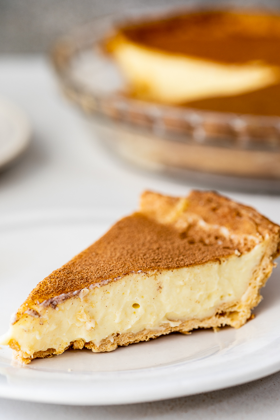

Milk tart

What is milk tart?
Melk Tert (milk tart) is a type of South African dessert pie. A sweet
pastry crust is filled with a custard filling and dusted liberally with
cinnamon. Some milk tart recipes call for cooked custard, but my favorite
is unbaked custard with almond extract, vanilla, and nutmeg put in a flaky
pie crust. You'll love milk tart if you like custard-based pies.
Ingredients
- Flour
- Icing sugar
- Butter
- Egg yolk
- Ice water
- Milk
- Cream
- Flour
- Sugar
- Vanilla extract
- Cornstarch
- Almond extract
- Nugmeg
- Cinnamon
Steps
-
The crust: The crust: The crust recipe I use is one that doesn't require
any rolling out. You simply press the dough into the pie plate before
freezing and then blind baking until golden brown and crisp. You can
substitute with a cookie crust or use any pie dough recipe you like.
-
The filling: As with all custards, milk tart filling starts with milk
(use whole/full fat milk), cream and flavorings being heated together.
To thicken and set the filling, I like using a combination of egg yolks,
cornstarch and flour. Whisk the flours and egg yolks with the sugar then
ladle in some of the hot milk mixture and whisk to temper the eggs. Pour
the mixture back into the saucepan and cook whilst whisking until the
custard is thick, smooth and cooked through. I like to pass the custard
through a fine mesh sieve to make sure there are no lumps or bits of
coagulated egg. Beat room temperature butter into the custard (this adds
extra silky richness to the finished tart) and pour the custard into the
baked crust.
-
Setting: Smooth the top of the tart out by spraying a piece of parchment
paper with cooking spray and pressing it onto the surface of the
custard. This allows you to smooth the top but also prevents a skin from
forming. Place the tart in the fridge and allow to set for at least 4
hours but overnight is even better.
-
Serving: Once you are ready to serve, dust the top of the tart with a
generous amount of cinnamon then slice and serve.